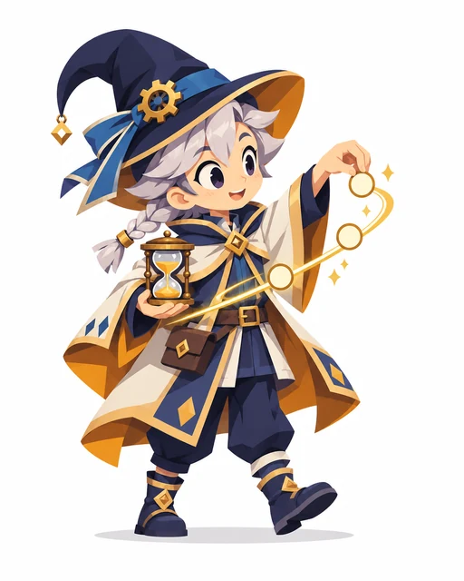
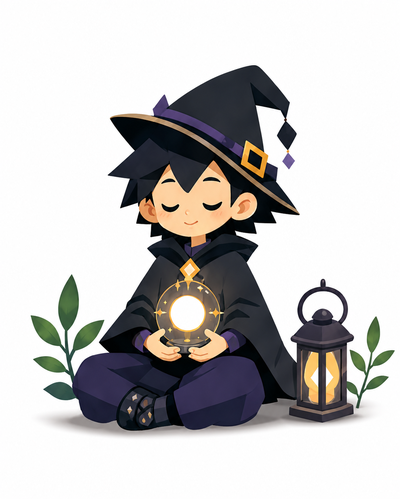
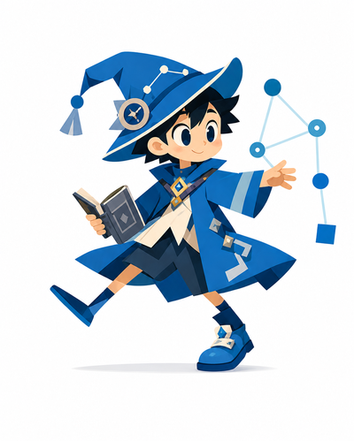

รายละเอียด Archetype
Family A · Arcane & Knowledge
Chronomancer
ผู้เรียนรู้จากเวลา ลำดับเหตุการณ์ และจังหวะตัดสินใจ
“เข้าใจโลก เพื่อเปลี่ยนแปลงโลก”



รู้จัก Chronomancer
ผู้เรียนรู้จากเวลา ลำดับเหตุการณ์ และจังหวะตัดสินใจ
ใช้ความรู้ การสำรวจแบบแผน และการมองเห็นความเป็นไปได้เพื่อเข้าใจโลก
ลายเซ็นนี้เป็นวิธีเล่าเรื่องการเรียนรู้ ไม่ใช่เงื่อนไขว่าคุณต้องเป็นแบบนี้ทุกครั้งหรือใช้มุมอื่นไม่ได้
Learning Signature
สามมุมการเรียนรู้ที่ใช้เป็นลายเซ็นของ Wizard สายนี้
นักตัดสินใจ
คุณกล้าชั่งน้ำหนักข้อจำกัดและเลือกทางเดินต่อ แม้ข้อมูลจะไม่ครบ 100%
นักทบทวน
คุณถอยกลับมาอยู่กับตัวเอง ตกผลึก และเข้าใจสิ่งที่เกิดขึ้นอย่างมั่นคงก่อนเดินต่อ
นักเชื่อมโยง
คุณเก่งเรื่องเห็นว่าสิ่งต่าง ๆ เชื่อมกันยังไง มองเห็น pattern ที่คนอื่นอาจมองไม่เห็น
จุดแข็งที่ชวนสำรวจ
เลือกจังหวะที่เหมาะสมและเรียนรู้จากอดีต
ลองนึกถึงเหตุการณ์ที่คุณเคยใช้มุมเหล่านี้ แล้วสังเกตว่ามันช่วยให้เข้าใจหรือทำสิ่งต่าง ๆ ได้อย่างไร
Growth Quest
ลองกำหนดช่วงสั้น ๆ เพื่อทดลองทางเลือกก่อนตัดสินใจ
ลองทำเป็นกิจกรรมเล็ก ๆ แล้วทบทวนว่าได้เรียนรู้อะไร ไม่จำเป็นต้องทำให้ได้เหมือนคำอธิบายทุกข้อ